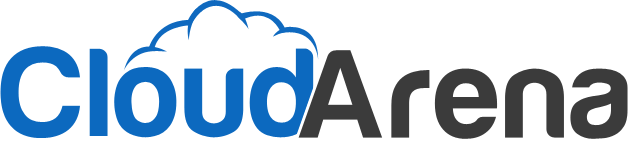
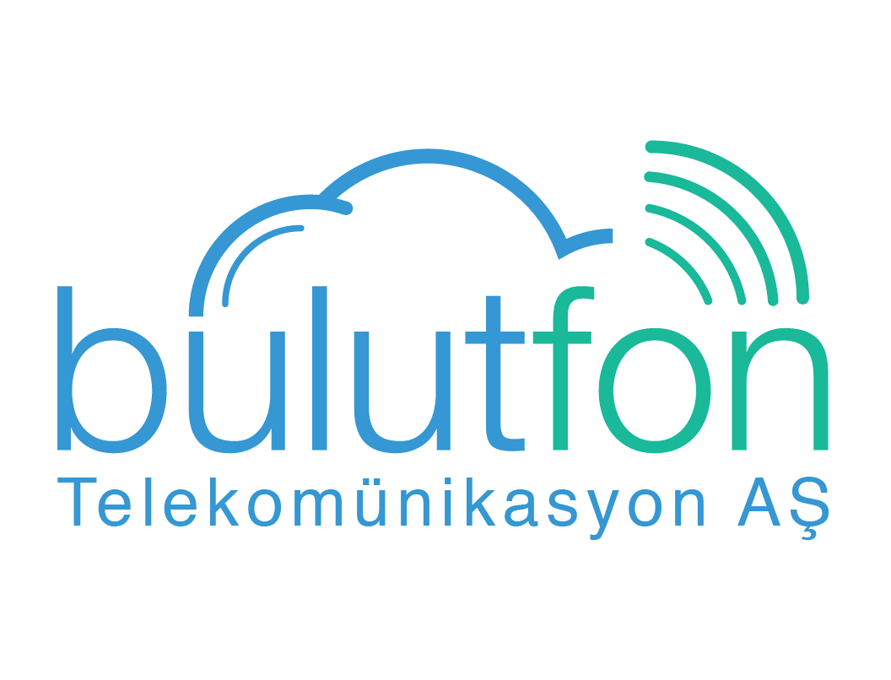
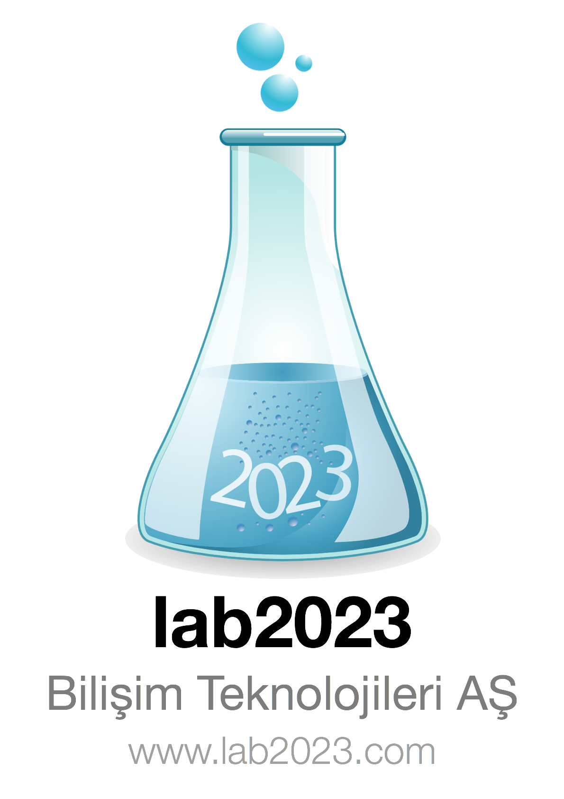

Rails Girls Ankara'ya geliyor. İki günlük ücretsiz workshop ile Ruby on Rails dünyasına yolculuğa hazır mısın?
Başvurular sonlanmıştır. Katılımcı listesi için tıklayınız.
Koçlarımızın yardımıyla tasarlamayı, prototiplendirmeyi ve kodlamayı öğrenin.
Tek ihtiyacınız olan bilgisayarınız, merak ve biraz hayal gücü!
Yardım etmek ister misiniz? Gönüllüler ve Rails koçları arıyoruz. Bize ulaşın.
| 18.00 - |
Kurulum PartisiKatılımcılarla tanışma. Getirebiliyorsanız laptoplarınızı da beraberinizde getiriniz, böylece Ruby on Rails'in kurulumunu sizler için yapabiliriz.Sizlerle tanışmayı sabırsızlıkla bekliyoruz. |
|---|---|
| 20.30 - |
Mentor YemeğiBütün mentorlarımız ertesi günkü programın konuşulacağı mentor yemeğine davetlidir. |
| 9:00 - 10:00 |
Kayıt, Kahve Ikramı, Kurulum PartisiBilgisayarlara Ruby on Rails'ın kurulumu! |
|---|---|
| 10:00 - 10:15 |
Hoşgeldiniz!Program akışı ve sponsorların konuşmaları |
| 10:20 - 10:45 |
WorkshopWeb Uygulamanizin Tasarlanması Şükrü BEZEN |
| 10:50 - 11:10 |
Tryruby.orgFurkan AYHAN |
| 11:10 - 13:00 |
WORKSHOPIlk uygulamanıza hızlı başlangıç! |
| 13:00 - 13:30 | Öğle Yemeği |
| 13.30- 13:45 |
Bentobox - Web Uygulamalarını AnlamaÖğrendiklerimizin özetlenmesi ve ilişkilendirilmesi.Harun Barış BULUT |
| 13:45 - 15:00 |
Lightning talks from coachesHow to start your own startup in Turkey Dilek DAYINLARLI, 212 Capital Women in Charge Canan ÇAKMAKÇI, Cyberpark |
| 15:00 - 17:00 |
WORKSHOPUygulamanızı geliştirin. |
| 20:00 - |
Kapanış Partisi |
Başvurular Için Son Tarih: 7 Mart
Katılımcıların Açıklanması: 10 Mart
Organizasyon Yeri:Rails Girls Ankara partnerlerimizin yardımlarıyla düzenlenmektedir.
Yardım etmek ister misiniz? Kar amacı gütmeyen bu organizasyon için ortaklar ve sponsorlar aramaktayız! Bize ulaşın.
 Etiya, bugün itibari ile 450’nin üzerinde uzman kadrosu olan, uluslararası standartlara uygunluğu bağımsız kurumlarca onaylanmış ; CRM, Ürün Kataloğu, Satış ve Sipariş Yönetim sistemlerinin sağlayıcısıdır ve alannda pazar lideridir.
Etiya, bugün itibari ile 450’nin üzerinde uzman kadrosu olan, uluslararası standartlara uygunluğu bağımsız kurumlarca onaylanmış ; CRM, Ürün Kataloğu, Satış ve Sipariş Yönetim sistemlerinin sağlayıcısıdır ve alannda pazar lideridir.
webBox.io Ruby, Python ve Unix gibi modern web teknolojilerini kullanan ve aynı zamanda iOS ve MacOS yazılım servislerini ve geliştirme hizmetlerini sağlayan bir şirkettir.
Cloudarena.com, turizm sektörüne yönelik olarak geliştirdiği küresel çözümlerle konaklama tesisi ve acente yönetimini ve dijital pazarlamasını kolaylaştıran, online rezervasyon deneyimini farklı bir boyuta taşıyan yenilikçi bir teknoloji şirketidir.
 212ltd Türkiye’deki internet ve teknoloji firmalarına erken dönem girişim sermayesi sağlayan yatırım fonudur. Fon, 2011 yılının Aralık ayında kurulduktan sonra seri yatırımlar yapmaya başlamış ve Eylül 2013 itibariyle 8 farklı girişime yatırım yaptı. 212, ürünü veya demosu hazır olan, erken aşama teknoloji ve internet girişimlerine yatırım yapmaktadır.
212ltd Türkiye’deki internet ve teknoloji firmalarına erken dönem girişim sermayesi sağlayan yatırım fonudur. Fon, 2011 yılının Aralık ayında kurulduktan sonra seri yatırımlar yapmaya başlamış ve Eylül 2013 itibariyle 8 farklı girişime yatırım yaptı. 212, ürünü veya demosu hazır olan, erken aşama teknoloji ve internet girişimlerine yatırım yapmaktadır.
Hizliceviri.net bulut tabanlı profesyonel çeviri ve yerelleştirme hizmetir. Geliştirdiği altyapı ile tüm iş akış süreçlerini otomatize ederek müşterilerine en kaliteli çeviriyi en hızlı şekilde sunar. 2+ milyondan fazla kelime çevirisine ulaşmıştır.
Bulutfon.com Netinternet ve Lab2023 firmalarının ortak girişimi olan bir telekomünikasyon firmasıdır. Bulutfon ses, sms, video, data transferi gibi iletişim ihtiyaçlarının, her hangi bir donanım ihtiyacı olmadan karşılanmasını sağlayan bir servistir.
Nokta, başta İzlesene.com, Sinemalar.com, Alkislarlayasiyorum.com, Doviz.com, Blogcu.com olmak üzere, Yemektarifleri.com ve Fotokritik.com gibi her biri kendi segmentinde lider içerik sitelerini bünyesinde barındıran ve ayda ortalama 17 milyon tekil ziyaretçisi ile Türkiye internet kullanıcılarının yüzde 54’üne erişen teknolojik medya şirketidir.
PlusClouds.com en yeni internet teknolojilerini kullanıcılara sunmak misyonuyla kurulmuş, İstanbul merkezli, dünya çapında bir Bulut Bilişim markasıdır. Bu amaçla Türkiye’de ilk defa yazılım firmalarının, sunucularını ve uygulamalarını Bulut'a taşıması için ihtiyaçları olan sistemi tedarik etmeye başlamıştır.
LAB2023 mobil ve internet yazılımları alanında ‘basit olan mükemmeldir’ sloganıyla faaliyet göstermekte olan bir organizasyon şirketidir. Uzaktan eğitim portalı, mobilya sektörü için internet portalı, facebook oyunu, crm, ödeme sistemleri uygulamaları gibi bir çok farklı alanda mobil ve internet tabanlı startup projesini hayata geçirilmiştir.
Cermodern sanatsal ve kültürel etkinlikleri, ulusal ve uluslar arası sergi faaliyetleri, kurumsal hizmetleri, tiyatro ve sinema etkinlikleri ve çeşitli atölye programları ile her yaş grubuna hitap eden eğitim faaliyetleri ile Ankara’ya yepyeni sosyal ve kültür yaşam alanı kazandırmıştır.
Etkinliğe katılım ücreti nedir?
Etkinliğe katılım ücreti yoktur.
Etkinliğe kimler katılabilir?
Bilgisayar kullanma konusunda temel bilgilere sahip olan her yaştan kadın etkinliğe katılabilir. Konuşmalar ve workshoplar Türkçe verilmektedir. Etkinliğe katılanların kendi laptoplarını getirmeleri gerekmektedir.
Erkekler de bu etkinliğe katılabilirler mi?
Konuyla ilgilenen ve kendilerine eşlik eden bir bayanla katılabilirler.
Ben programlamayı biliyorum, nasıl yardımcı olabilirim?
Katılımcılarımıza workshop verecek mentorlar da arıyoruz. Bizimle iletişime geçin.